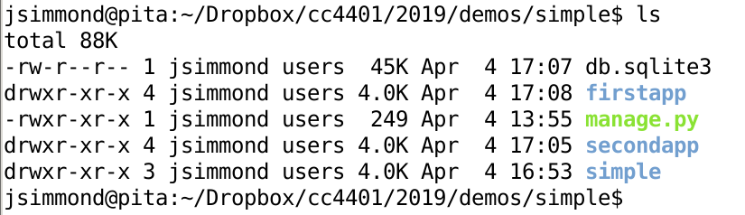
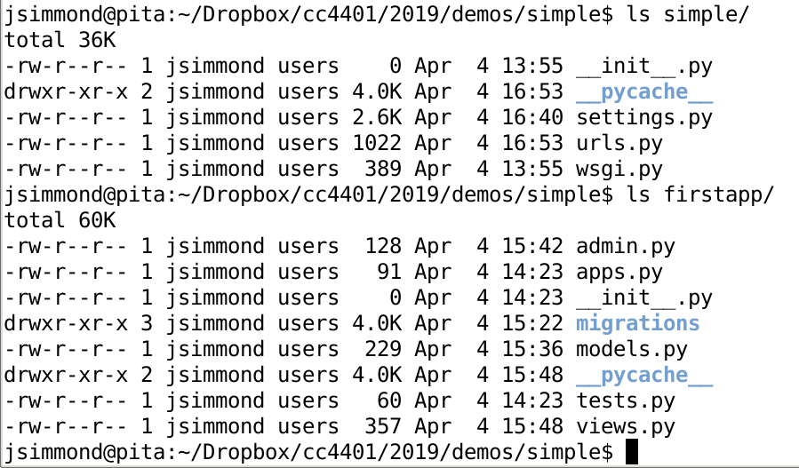

Django es un framework que permite desarrollar aplicaciones web de manera fácil. Seguiremos escribiendo scripts para manejar los datos que usuarios nos envían por formularios, aun tendremos que diseñar nuestros formularios, etc. La gracia de usar un framework como Django es ya no tendremos que construir desde cero algunas cosas que son comunes a aplicaciones web, como el manejo de usuario, el manejo de conexiones a una BD, manejo de errores, etc.
Django sigue un patrón de arquitectura llamado Model-View-Template (MVT). Esto significa que el framework maneja todo a través de tres componentes:
Ahora veamos la estructura básica de un proyecto Django:

En este ejemplo, cree un proyecto llamado simple, y este a la vez tiene 3 aplicaciones: firstapp, secondapp y simple. Ojo que la aplicación simple se creo en forma automática al crear el proyecto. Esta es la aplicación de entrada al proyecto, aquí configuraremos cosas como el mapeo entre URLs y views, donde esta la BD, que objetos del modelo se pueden ver en la consola de administración, etc. Al mismo nivel que las carpetas de las aplicaciones hay un archivo llamado manage.py, que usaremos para crear aplicaciones, aplicar cambios al modelo, etc.
La siguiente imagen muestra las diferencias entre la aplicación simple y una creada de forma manual:

Aquí pueden ver que simple tiene los archivos settings.py y urls.py, mientras que firstapp tiene los archivos admin.py, models.py y views.py. Estos son los archivos que modificaremos en esta demo. Cada archivo tiene un propósito especifico.
En el caso de simple:
Esta demo asume que ya instalaron alguna versión de Django para Python 3.x. Como Django genera varios archivos Python, tengan cuidado de usar el mismo tipo de tabulación que ya hay en los archivos, para evitar problemas de sintaxis.
django-admin startproject nombre_proyectocd nombre_proyecto
python manage.py runserver puertopython manage.py startapp nombre_appINSTALLED_APPS = (
'django.contrib.admin',
'django.contrib.auth',
'django.contrib.contenttypes',
'django.contrib.sessions',
'django.contrib.messages',
'django.contrib.staticfiles',
'nombre_app',
)
from django.http import HttpResponse
...
def hello_world(request):
text = "<h1>EXITOOO</h1>"
return HttpResponse(text)
from nombre_app import views as nombre_views
...
urlpatterns = [
url(r'^admin/', admin.site.urls),
url(r'^hi/', nombre_views.hello_world, name='hi'),
]
Las aplicaciones Django tienen modelos, cada modelo representa un objeto dentro de la aplicación. Algunos objetos van a representar objetos de la vida real, como alumnos, rubricas, etc., pero otros objetos son sintéticos, los irán diseñando a medida que construyen su aplicación.
class FarmAnimal(models.Model):
animal_name = models.CharField(max_length = 15)
nbr_legs = models.IntegerField(default=4)
def __str__(self):
return self.animal_name
python manage.py makemigrations nombre_app
python manage.py migrate
python manage.py shell
>> # importar la definicion de FarmAnimal
>> from nombre_app.models import FarmAnimal
>>
>> # retorna un QuerySet con los objetos que encontro en la BD .. inicialmente vacia
>> FarmAnimal.objects.all()
>>
>> # creamos un objeto ...
>> f = FarmAnimal(animal_name="cow", nbr_legs=4)
>>
>> # ... y lo guardamos en la BD
>> f.save()
>>
>> # el QuerySet ahora tiene un objeto
>> FarmAnimal.objects.all()
>>
>> f2 = FarmAnimal(animal_name="lamb", nbr_legs=4)
>> f2.save()
>> f3 = FarmAnimal(animal_name="hen", nbr_legs=2)
>> f3.save()
from .models import FarmAnimal
...
def hello_world(request):
...
def bye_world(request):
farmAnimals = FarmAnimal.objects.all()
text = ', '.join([f.animal_name for f in farmAnimals])
return HttpResponse(text)
from nombre_app import views as nombre_views
...
urlpatterns = [
url(r'^admin/', admin.site.urls),
url(r'^hi/', nombre_views.hello_world, name='hi'),
url(r'^bye/', nombre_views.bye_world, name='bye'),
]